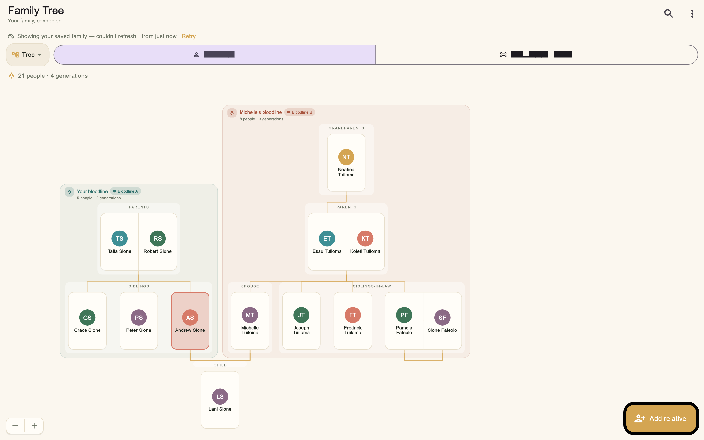
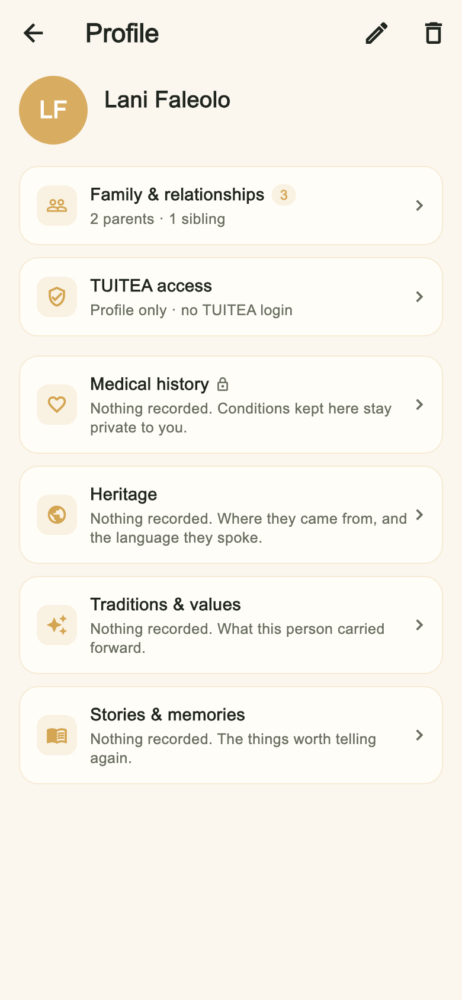
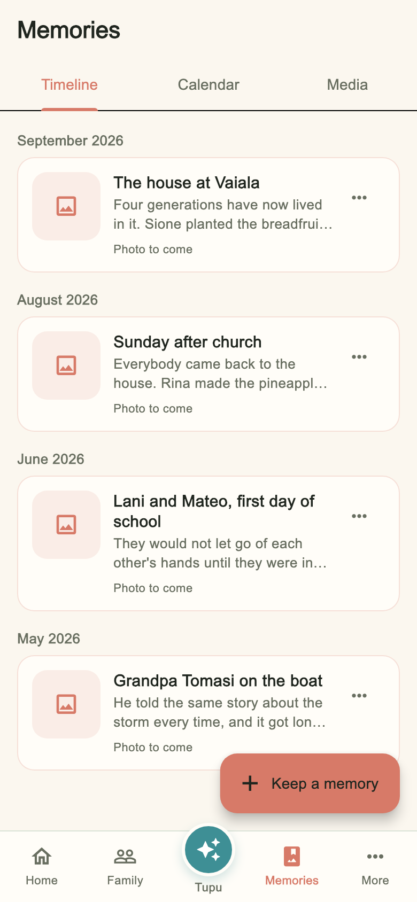
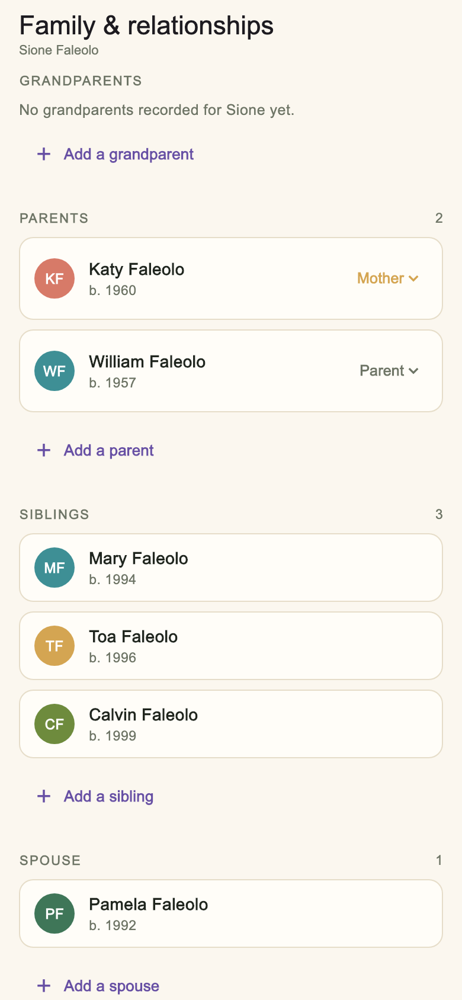

A private app for one family
Who everyone is and how they are related. The photographs and the stories behind them. The health and the everyday running of a household. One place, and it belongs to you.
Free. Nothing to buy, and no advertising inside it — ever.
You're invited. Your invitation will be waiting inside TUITEA the first time you open it.
The family tree
Most family trees draw one line of descent and leave everyone else off the edge. Real families are not shaped like that. TUITEA puts a person at the centre and shows the families they actually belong to — the one they were born into and the one they married into — side by side, each with its own grandparents, parents and brothers and sisters.

Add yourself, then one relative at a time. The tree builds itself as you go.

Profiles
Where they were born and when. The village, the church, the crossing. The story an aunt told once that nobody wrote down. Each kind of record has its own place, so adding one is obvious and finding one later is quick.
Relationships are editable after the fact. If somebody was added as a parent and they are a mother, you say so — TUITEA never guesses it for you and never quietly fills it in.
Manatua — memories
A memory holds as many photographs and videos as the day actually had, the people who were there, and what was happening. The timeline shows one picture from each; open it and the rest are there.
Videos show the first frame rather than a grey box, so a memory still looks like the day it came from.


Family & relationships
Parents, brothers and sisters, a husband or wife, children — grouped the way a family says it rather than the way a database stores it. Each relationship is named, and each one can be corrected later without starting again.
Add somebody from here and TUITEA works out the rest of the connections, including the ones on the other side of the family.
Every day
The parts of a household that are easy to lose track of, kept in the same place as the people they belong to.
What is on, who it is for, and what is coming up — shared with the people it concerns.
Measurements, appointments and records. Each person decides what they share, and nobody can change that for them.
Sleep, meals, groceries and the small daily things — including progress photos, kept where the rest of it is.
Privacy
TUITEA is not a social network and there is nothing public in it. A household is visible only to the people in it who have been approved, and each person is given only the access they were granted.
Health sharing is each person's own choice. Nobody else — not even whoever set the household up — can see it or change it on their behalf.
Get TUITEA
If something goes wrong
Report a problem in TUITEA sends us the screen you were on, which is the fastest way to get something fixed. If you cannot get in at all, support is here and you can reset your password.